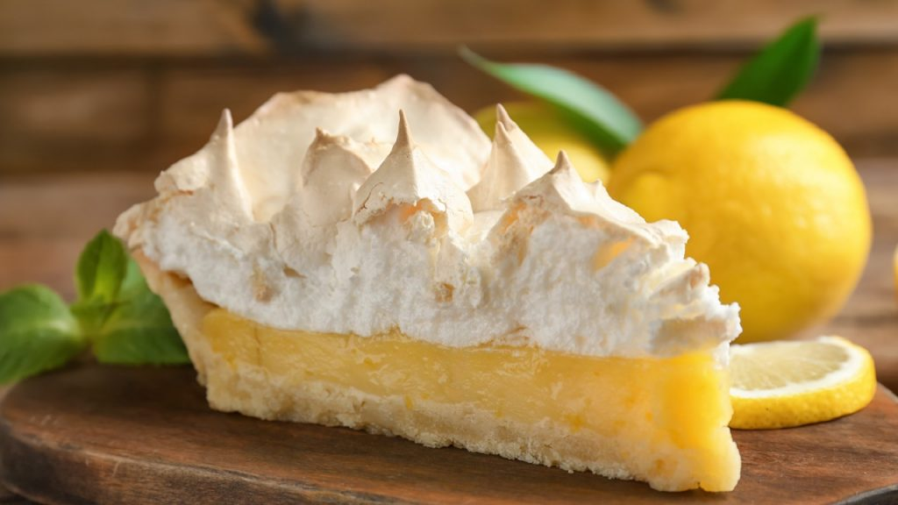

Lemon Pie

A zesty-sweet dessert with a crisp crust, tangy lemon curd, and a fluffy, golden-browned meringue topping.
Classic dessert featuring a crisp, buttery crust filled with smooth, tangy lemon curd and topped with a light, fluffy meringue.
The lemon filling is vibrant and zesty, made with fresh lemon juice and zest, offering a perfect balance of sweet and tart. The
meringue, whipped to glossy peaks and lightly toasted in the oven, adds a soft, airy sweetness that contrasts beautifully with
the bright citrus base. Each bite combines creamy, crisp, and cloud-like textures in a refreshing and indulgent treat.
Ingredients
Pie crust
- 2 1/2 cups all-purpose flour (300 g)
- 1 cup icing sugar (200 g)
- 3/4 cup butter (100 g)
- 1 egg
Lemon Filling
- 1 can sweetened condensed milk (397 g)
- 1 cup fresh lemon juice (200 g)
Meringue
- 3 eggs
- 1 cup white sugar (200 g)
Steps
- In a bowl, mix the flour with the powdered sugar, add the butter, and rub with your fingers until the mixture resembles sandy crumbs.
- Add the egg and 1 of the yolk (only the egg white are for the meringue), work the mixture with your hands until you get a compact dough.
- Roll out the dough until it's about 0.5 cm thick and line a previously buttered and floured tart pan (approximately 26 to 28 cm in diameter).
- Prick the dough with a fork and bake in a preheated oven at medium-high temperature (180°C / 356°F) for 10 to 12 minutes until lightly golden.
Then remove from the oven.
- In a bowl, mix the condensed milk, the lemon juice and the 2 remained yolk, stir until smooth. Pour this mixture over the pre-baked crust and return
to the oven for about 10 minutes. Remove and let cool.
- In a bowl, combine the egg whites with the sugar and place over a gentle double boiler, stirring occasionally until the sugar crystals are completely
dissolved.
- Remove the bowl from the heat and beat vigorously for 8 to 10 minutes until the mixture triples in volume and becomes firm and glossy. Cover your pie
with the meringue and enjoy.